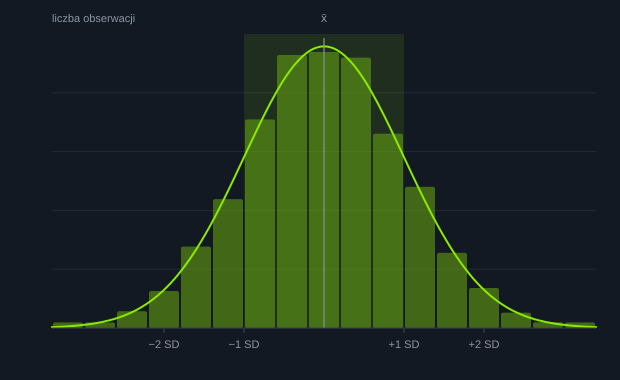
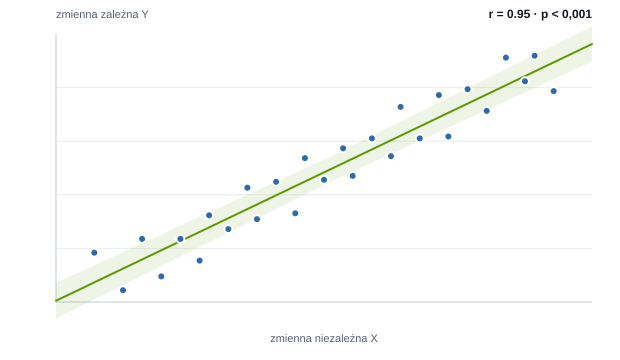
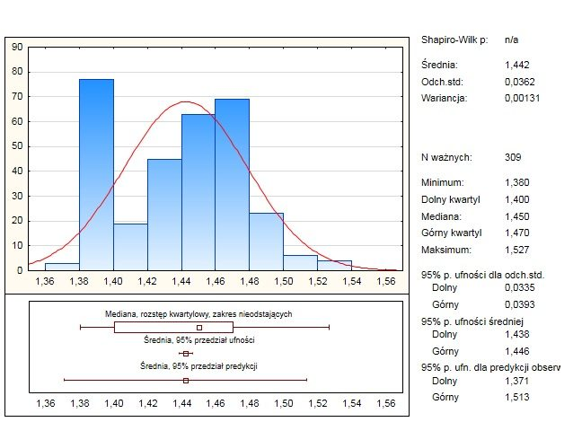

Rozmowa już na etapie pomysłu
O badaniach i ich opracowaniu możesz rozmawiać z nami nawet wtedy, gdy masz sam pomysł. Pomożemy przygotować cały projekt — mamy interdyscyplinarne podejście do stawianych problemów badawczych.
Profesjonalna pomoc statystyczna
Opracowania statystyczne do prac dyplomowych, doktoratów i publikacji naukowych. Nie tylko liczymy — tłumaczymy każdy wynik tak, żeby dało się go uzasadnić przed promotorem i recenzentem.

Podejście
Wspieramy studentów, doktorantów i zespoły badawcze na każdym etapie: od pomysłu na badanie, przez dobór metod, po interpretację i obronę wyników.
O badaniach i ich opracowaniu możesz rozmawiać z nami nawet wtedy, gdy masz sam pomysł. Pomożemy przygotować cały projekt — mamy interdyscyplinarne podejście do stawianych problemów badawczych.
Nie trzeba umieć wykonywać analiz statystycznych, żeby rozumieć ich wyniki. Wszystkie obliczenia wyjaśniamy krok po kroku — na spotkaniach bezpośrednich lub konsultacjach online.
Niech rośnie Twoja pewność siebie do badań, które realizujesz. Otrzymujesz nie tylko gotowy raport, ale też argumenty na recenzje i pytania podczas obrony.

Od planu do projektu
Przeprowadzone przez Państwa badania — do pracy dyplomowej czy naukowej — są zawsze realizowane nakładem pracy, czasu, a niejednokrotnie środków finansowych. Poprawnie i rzetelnie wykonana analiza statystyczna sprawia, że ten wysiłek nie idzie na marne.
Przebieg
Przed rozpoczęciem współpracy omawiamy wszystkie poruszane zagadnienia, sprawdzamy możliwość weryfikacji założeń oraz hipotez i koncentrujemy się na uzyskaniu oczekiwanego celu.
W trakcie wykonywania opracowania na bieżąco rozwiązujemy wątpliwości. Podczas końcowego omówienia raportu ustalamy dalsze kroki i możliwości analizy wyników.
Chcąc wykonać raport jak najlepiej, na każdym etapie staramy się wyłapać najdrobniejsze błędy oraz uzupełnić opracowanie zgodnie z oczekiwaniami klienta.
Osiągnięcia

Samouczek
Krótkie, konkretne definicje pojęć, które najczęściej pojawiają się w pracach dyplomowych i recenzjach: poziom istotności, błąd I i II rodzaju, miary położenia i zróżnicowania, analiza przeżycia i wiele innych.
Przykłady realizacji
Wybrane, w pełni zanonimizowane przykłady opracowań — bez nazwisk, nazw uczelni i szczegółów pozwalających rozpoznać autora. Poufność obowiązuje zawsze.
Pielęgniarstwo · praca magisterska
125 ankiet. Autorską skalę zbudowaną na podstawie dostarczonej ankiety zweryfikowano metodą głównych składowych (PCA) oraz współczynnikiem alfa Cronbacha. W analizach porównawczych: test U Manna-Whitneya i test chi-kwadrat Pearsona. Praca obroniona na 5.
Fizjoterapia · praca magisterska
40 pacjentów z pomiarem przed i po wdrożonej terapii. Zmianę oceniono testem Wilcoxona, a wielkość poprawy ruchomości kręgosłupa skorelowano (korelacja) z czynnikami socjodemograficznymi. Praca obroniona na 5.
Medycyna · artykuł naukowy
Metaanaliza na podstawie literatury: związek stężenia witaminy D3 w organizmie kobiet z nasileniem objawów depresyjnych, z uwzględnieniem wieku. Efekt: opracowanie statystyczne wykorzystane w opublikowanym artykule naukowym.
Intensywna terapia · publikacja naukowa
Budowa modelu predykcyjnego z użyciem uczenia maszynowego (biblioteka scikit-learn w języku Python) dla danych medycznych dotyczących przeżywalności pacjentów oddziału intensywnej terapii. Efekt: model wykorzystany w opublikowanym artykule naukowym.
Opinie
Opinie zbieramy tam, gdzie nie da się ich edytować ani usunąć — w wizytówce Google i na Facebooku. Zajrzyj do nich przed pierwszym kontaktem.
Prześlij opis badania lub plik z danymi — odpowiemy, co da się z nich wyciągnąć, ile to potrwa i ile będzie kosztować. Płacisz dopiero po wykonaniu usługi.